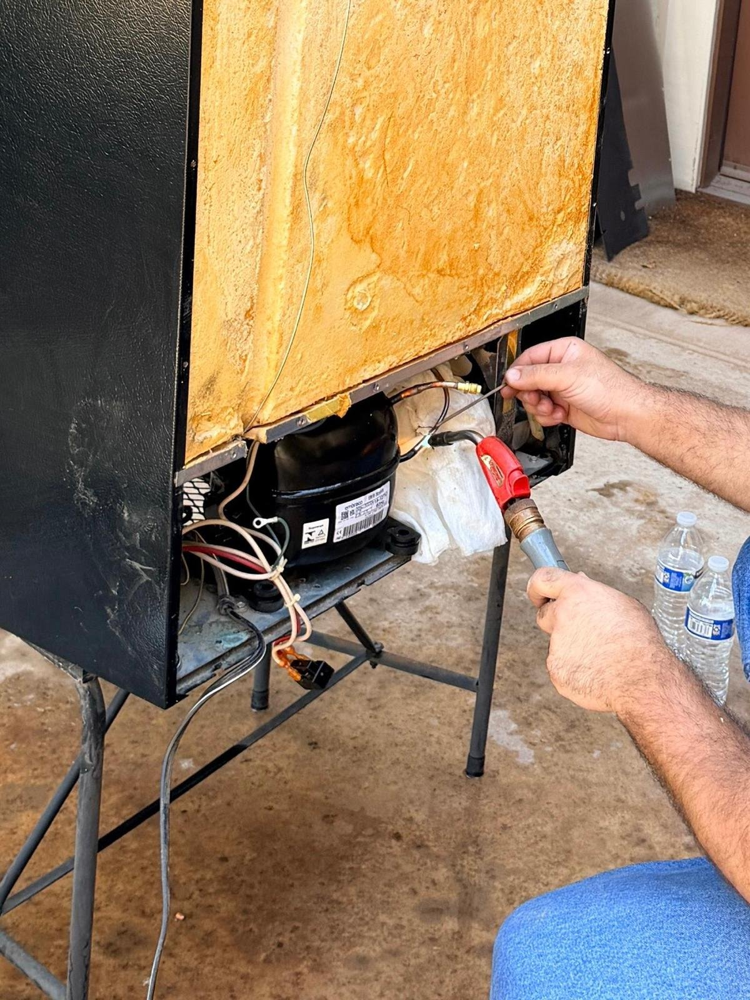
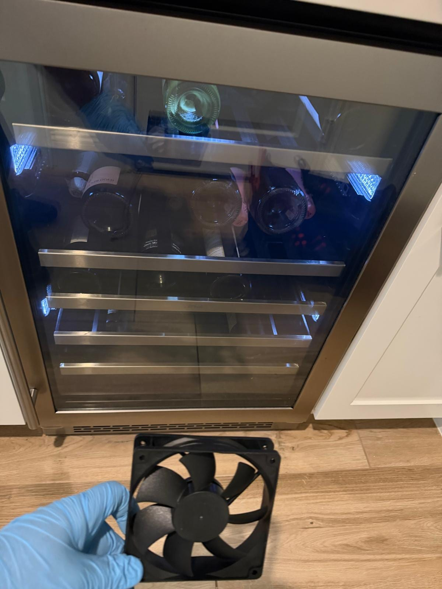

Costa Mesa, CA
Wine cooler compressor brazing
We do the real refrigeration work, not just diagnostics.
Thermoelectric and compressor wine coolers, freestanding and built-in. Sub-Zero to Vinotemp. Same-day service available.
5.0 · 156 Google reviewsMon–Sat, 8am–7pm. You don't need to know which part failed; tell us what the wine cooler is doing.

Family-owned since 2017 · Licensed, bonded & insured
Recent wine cooler jobs our technician completed include a Viking compressor brazing in Costa Mesa and a Zephyr fan replacement in Ladera Ranch.

Costa Mesa, CA
We do the real refrigeration work, not just diagnostics.
Ladera Ranch, CA
The cooling fan was replaced on this Zephyr built-in wine cooler. The photo shows the wine cooler with a cooling fan held up in front of it.
Same-day service is available. If a part has to be ordered, you will know before any work starts.
Request a RepairEstimates vary by brand, part availability, and diagnosis. Final quote is provided before repair. See full pricing guide
Most wine cooler failures are diagnosed and repaired in a single visit. Common parts stocked on every service vehicle.
Not all wine coolers fail the same way. The cooling technology inside your unit determines what breaks, how it's diagnosed, and what the repair costs. This is the most important thing a technician needs to know before opening your unit.
Peltier module technology
Uses a Peltier module to transfer heat without moving parts or refrigerant. Quieter and vibration-free, making them ideal for sparkling wines and light reds. The tradeoff: thermoelectric units can only cool about 20 degrees below ambient room temperature. In OC summer heat when indoor temps reach 80°F, a thermoelectric cooler cannot hold the 55°F target many wine owners set.
Typical repair range: $120–$280
Refrigerant cycle technology
Works like a standard refrigerator using a compressor and refrigerant circuit. Can maintain 45–65°F regardless of ambient room temperature, making them suitable for year-round OC use including garage and outdoor kitchen installations. Built-in, under-counter, and luxury column wine coolers are almost always compressor-based.
Typical repair range: $150–$700+
We service all wine cooler brands across Orange County, from luxury built-in columns to mass-market freestanding units. Some brand names below link to a dedicated page. The rest don't yet, but we service them too, so call if yours isn't linked.
Independent repair service. Not affiliated with or endorsed by these manufacturers; brand names and logos are trademarks of their owners.
The right answer depends on the model, age, cabinet fit, and what failed. Compare the written repair estimate with a current replacement-and-installation quote for a comparable unit.
NewAir, Danby, Haier, entry Vinotemp
For entry-level units, compare the written repair estimate with a current replacement-and-installation quote. A recent unit with a minor failure may still be worth repairing.
Vinotemp mid-range, KitchenAid, Frigidaire, Allavino, U-Line entry
For mid-range units, compare the written repair estimate with a current replacement-and-installation quote. Age, warranty coverage, and the failed component all affect the decision.
Sub-Zero, EuroCave, Liebherr, U-Line Pro, Perlick, Marvel, Viking
For built-in and luxury units, model-specific replacement and installation quotes are especially important because cabinet fit can affect the total. We'll give you honest numbers before work starts.
Our guideline: If the unit is under 10 years old and the repair is under 50% of a comparable replacement, fix it. If a compressor has failed on a budget unit over 6 years old, we'll say so honestly, and we won't charge you a full repair bill just to deliver that news.
Estimates vary by brand, part availability, and diagnosis. Final quote is provided before repair.
| Repair Type | Typical Range |
|---|---|
| Service call / diagnostic: Orange County market average (often credited toward repair) | $75 – $100 |
| Thermoelectric module / cooling fan | $180 – $350 |
| Evaporator fan motor | $180 – $350 |
| Thermostat / control board | $200 – $400 |
| Door gasket / seal | $150 – $300 |
| Compressor (compressor-based models) | $450 – $850 |
See our full appliance repair cost guide for broader Orange County pricing context.
Universal Appliances Repair Group Inc. provides wine cooler repair across Orange County, California, servicing thermoelectric and compressor-based units including Sub-Zero, EuroCave, Liebherr, U-Line, Vinotemp, Viking, KitchenAid, Perlick, Marvel, and all major brands. We repair wine coolers that are not cooling, running too warm, making noise, leaking, or displaying error codes.
Our technicians serve Irvine, Newport Beach, Anaheim, Huntington Beach, Costa Mesa, and all of Orange County, with same-day service available. Call (949) 629-5365 or book online to schedule a wine cooler repair visit.
Still have a question? Call (949) 629-5365.
Same-day service available. We stock Peltier modules, fan motors, thermostats, and door gaskets for thermoelectric and compressor units. Call before noon for same-day availability.